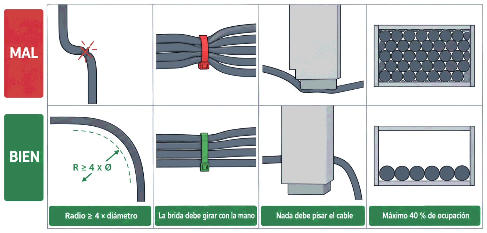

Todo lo demás de hoy —tipos de canalización, ocupación, tensión de tirado, unidades de rack y reparto interno— procede de las normas de instalación y de la práctica profesional.
Contenido del día
1. Por dónde va el cable: las canalizaciones
Un cable de red no se deja suelto. Va dentro de una canalización, que lo protege, lo ordena y permite sustituirlo sin romper nada.
| Tipo | Qué es | Dónde se usa | Ventaja e inconveniente |
|---|---|---|---|
| Canaleta | Perfil de PVC con tapa, vista sobre la pared o el rodapié | Oficinas ya construidas, reformas sin obra | Se instala sin romper nada · queda a la vista y se llena enseguida |
| Bandeja rejilla o rejiband |
Rejilla metálica abierta, colgada del techo | Falsos techos, naves, centros de datos | Mucha capacidad y fácil de ampliar · necesita techo accesible |
| Tubo corrugado | Tubo flexible empotrado en la pared | Obra nueva, tabiques, suelo | Queda oculto · hay que preverlo antes de cerrar la pared |
| Suelo técnico | Suelo elevado sobre pedestales, registrable | Centros de datos y oficinas diáfanas | Flexibilidad total · caro y roba altura |
Cualquier canalización debe permitir meter y sacar cable después, sin obra. Si para añadir una toma hay que picar la pared, la canalización está mal resuelta, por muy ordenada que quedara el primer día.
2. Cuántos cables caben: la ocupación
Y aquí viene el cálculo que más se ignora y más problemas causa. Una canaleta no se llena: se ocupa como mucho un 40 % de su sección.
- Para poder tirar de un cable nuevo sin arrastrar ni aplastar los que ya están.
- Porque los cables no se apilan como ladrillos: entre círculos siempre queda aire perdido.
- Para que el calor se disipe y no se deforme el aislante.
- Porque un haz muy apretado presiona los cables y eso empeora la diafonía, que es lo que se mide el miércoles.
sección de la canaleta = ancho × alto (mm²)
sección útil = sección × 0,40
sección de un cable = π × radio² (radio = diámetro / 2)
nº de cables = sección útil ÷ sección de un cableEjemplo con una canaleta de 40 × 25 mm y cable de 6 mm de diámetro:
40 × 25 = 1 000 mm²
1 000 × 0,40 = 400 mm² útiles
π × 3² = 28,3 mm² por cable
400 ÷ 28,3 ≈ 14 cablesCatorce cables en una canaleta que, a la vista, parece que admitiría el doble. Esa diferencia entre lo que cabe y lo que debe caber es la que hace que, tres años después, no entre ni un cable más.
3. Las reglas del tirado
Tirar de un cable parece la parte menos técnica del trabajo. Es, sin embargo, donde se estropean instalaciones enteras, porque el daño no se ve: el cable queda entero por fuera y con la geometría interna destrozada.
| Regla | Valor de referencia | Qué pasa si se incumple |
|---|---|---|
| Tensión máxima de tirado | Unos 110 N, es decir, el peso de unos 11 kg, para un par trenzado de 4 pares | Los pares se estiran y el paso del trenzado se abre: sube la diafonía para siempre |
| Radio de curvatura | Al menos 4 veces el diámetro del cable; en fibra, 25 mm | Deforma los pares y altera la impedancia: pérdida por retorno |
| Bridas sin apretar | Deben poder girar sobre el haz con la mano | Una brida apretada aplasta el cable y hace lo mismo que una curva cerrada |
| Sin empalmes | Ninguno, nunca | Discontinuidad de impedancia y punto de entrada de ruido |
| Sin tramos aplastados | Ni bajo una pata de armario ni pinzado en una tapa | Igual que la brida: geometría rota en ese punto |
| Reserva en los extremos | Unos 2-3 m en el armario y algo en la roseta | Sin reserva, un error de montaje obliga a tirar el tramo entero |

MAL BIEN
┐ ╭─╮ curva amplia
│ curva en ángulo │ │ ≥ 4 × diámetro
┘ ╰─╯
▓▓▓ brida apretada ○○○ brida que gira con la mano
████ canaleta llena ██·· ocupación ≤ 40 %4. Separación de la energía eléctrica
Ya lo viste en la Semana 6 como una de las cuatro reglas de seguridad del cobre: la separación entre el cableado de datos y el de energía debe cumplir los códigos de seguridad. En la práctica, eso se traduce en tres cosas:
| Situación | Qué hacer |
|---|---|
| Canaleta compartida | Usar canaleta con tabique separador, o canalizaciones distintas |
| Recorridos paralelos largos | Mantener distancia: cuanto más largo el paralelismo, más separación |
| Cruces inevitables | Cruzar en ángulo recto: así el acoplamiento es mínimo |
El acoplamiento entre dos cables depende de cuánto camino comparten. Dos cables paralelos a lo largo de veinte metros se acoplan durante veinte metros; dos cables que se cruzan perpendicularmente se acoplan en un punto. Es el mismo razonamiento del trenzado: geometría contra interferencia.
5. Armarios: la unidad de rack
El libro lo dice: los dispositivos se montan atornillados a unas barras verticales convenientemente perforadas. Esa estructura está normalizada, y su medida es universal:
- El ancho útil entre las barras es de 19 pulgadas, unos 48,26 cm. Por eso todo el equipamiento profesional mide lo mismo de ancho.
- La altura se cuenta en unidades de rack, la U: 1 U = 44,45 mm, redondeando, 4,45 cm.
| Armario | Altura útil | Dónde se usa |
|---|---|---|
| Mural de 6U a 12U | 27 a 53 cm | Un despacho, una vivienda, una zona pequeña |
| De pie de 22U | 98 cm | Armario de planta de tamaño medio |
| De pie de 42U | 1,87 m | El clásico de sala de equipos y centros de datos |
Además de la altura hay que elegir el fondo —600, 800 o 1 000 mm— y ahí manda el equipo más profundo: un switch ocupa poco, pero un servidor puede pasar de 70 cm, y aún hay que dejar sitio detrás para los cables.
6. Cómo se reparte un armario
Los elementos no se colocan por orden de llegada. Cada uno ocupa su altura y tiene su sitio lógico:
| Elemento | Altura | Dónde va y por qué |
|---|---|---|
| Panel de parcheo de 24 puertos | 1U | Arriba, donde llega el cableado fijo |
| Pasahilos o peine | 1U | Entre panel y switch: guía los latiguillos y evita que cuelguen |
| Switch de 24 o 48 puertos | 1U | Pegado a su panel, para que los latiguillos sean cortos |
| Bandeja para equipos sin orejas | 1U o 2U | Donde haga falta |
| SAI | 2U o más | Abajo: es lo más pesado con diferencia |
| Regleta de alimentación | 1U, o vertical | Atrás o abajo |
- Lo pesado, abajo. Un SAI arriba convierte el armario en algo que puede volcar.
- Panel y switch, emparejados, con su pasahilos entre medias. Un panel arriba del todo y su switch abajo significa 24 latiguillos cruzando el armario entero.
- Deja U libres. Entre un 20 y un 30 % del armario, para crecer y para que circule el aire.
- Piensa en el aire. Los equipos suelen tomar aire por delante y expulsarlo por detrás: no se tapan las rejillas ni se apilan sin criterio.
42U ┌──────────────────────┐
│ 1U panel de parcheo│ ← el cableado fijo termina aquí arriba
│ 1U pasahilos │
│ 1U switch │
│ 1U panel │
│ 1U pasahilos │
│ 1U switch │
│ … │
│ libre (20-30 %) │ ← para crecer y para el aire
│ 2U SAI │ ← lo más pesado, abajo
0U └──────────────────────┘7. Lo que un armario necesita además
| Necesidad | Por qué |
|---|---|
| Puesta a tierra | Sin ella, las pantallas de los cables apantallados no sirven de nada, como viste en la Semana 6. Y es seguridad eléctrica |
| Alimentación protegida | Un SAI mantiene la electrónica viva durante un corte y filtra la calidad de la red |
| Ventilación | Un armario cerrado lleno de electrónica se calienta. Ventiladores, rejillas o sala climatizada |
| Cierre | Un armario accesible a cualquiera es un problema de seguridad: ahí está toda la red |
| Espacio delante y detrás | Para poder trabajar. Un armario pegado a la pared obliga a desmontarlo para tocar la parte trasera |
| Iluminación y un enchufe | Suena menor, y se agradece a las once de la noche con una avería |
8. Resumen y errores frecuentes
- Canalizaciones: canaleta, bandeja, tubo y suelo técnico. Todas deben permitir meter cable después.
- Ocupación máxima: 40 % de la sección. Una canaleta de 40 × 25 admite unos 14 cables de 6 mm.
- Tirado: 110 N de tensión máxima, radio de curvatura de al menos 4 veces el diámetro, bridas que giren, sin empalmes y con reserva.
- Datos y energía: separados, y si se cruzan, en ángulo recto.
- 1 U = 44,45 mm; el armario estándar es de 19 pulgadas de ancho; uno de 42U mide 1,87 m.
- Reparto: lo pesado abajo, panel y switch emparejados con pasahilos, y entre un 20 y un 30 % libre.
- Un armario necesita tierra, SAI, ventilación, cierre y espacio para trabajar.
| Se dice… | …pero en realidad |
|---|---|
| «En esta canaleta caben treinta cables» | Caben a presión; deben ir unos catorce. El 40 % no es un capricho |
| «El cable aguanta, tira más fuerte» | Por encima de 110 N se abre el trenzado y la diafonía sube para siempre |
| «Una brida bien apretada deja el haz más limpio» | Aplasta los cables y altera su geometría: debe poder girar con la mano |
| «El daño de una curva cerrada se ve» | No se ve: el cable queda entero por fuera y suspende en la certificación |
| «Los cables de red y los de corriente pueden ir juntos si están bien aislados» | Hay que separarlos, y cruzarlos en ángulo recto cuando no quede otra |
| «El armario lo lleno de arriba abajo, así aprovecho» | Hay que dejar 20-30 % libre para crecer y para el aire |
| «El SAI arriba, que pesa poco» | Es lo más pesado del armario: va abajo, o el conjunto puede volcar |
9. Repaso con flashcards
Piensa la respuesta antes de girar la tarjeta.
Quiz del día
15 preguntas · 21 minutos · Contesta sin volver a la teoría
El cronómetro no corre mientras lees: arranca al llegar aquí, al pulsar «Empezar quiz» o al marcar tu primera respuesta.
Resultados
Respuestas correctas: 0 / 0
Respuestas incorrectas: 0
Un armario vacío y el material de una planta de 48 puestos. Hay que repartir las unidades, elegir la altura del armario y comprobar si las canaletas previstas dan de sí.
→ Ir al laboratorio del Día 2 (66 min)
Comprobación y certificación, el día más denso de la semana y el que más sale del libro: los tres tipos de comprobador, la reflectometría y los parámetros que deciden si la instalación se acepta.
Tarea de calentamiento (5 min): de los errores de hoy —curva cerrada, brida apretada, cable aplastado—, ¿cuál crees que aparecerá en el informe y con qué nombre?